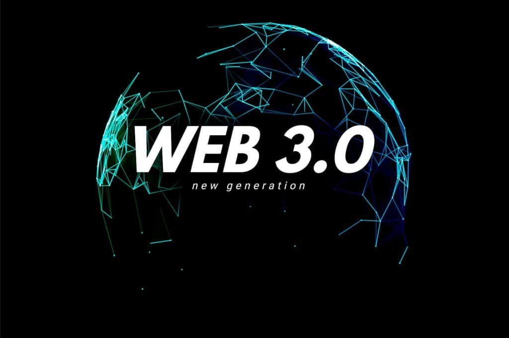

Web 3.0 refers to the third generation of the World Wide Web, characterized by semantic web technologies, decentralized applications, and enhanced user experiences.
Web 3.0 aims to create a more intelligent and interconnected web where data is structured and machines can understand and process it more effectively. It emphasizes the use of blockchain technology, artificial intelligence, and decentralized platforms.